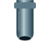
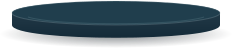
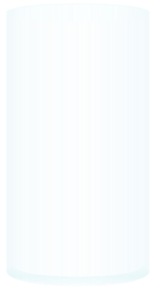
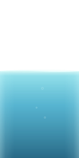

Visual & motion direction · 01
FILL LINE
An illuminated glass instrument. Cool mineral water, reflected window light, and warm ivory controls. This sheet shows the materials; the handoff specifies every screen and animation.
Complete design handoff · CSS tokens · Progress log
On the line





Material and button feedback sample
360 × 800 composition study. Water and band are shown together for material inspection, using a sample target at 55%. Press Fill to preview its CSS press feedback. This sheet does not run game logic. Fonts use system fallbacks.
Light, glass, water
Two static glass layers enclose the animated water. A narrow left glint and brighter liquid edges suggest thickness and refraction without a full-scene shader.
#213E50#F3DFB3#229DC2#91E6BA#FF998D#F3C2B6The attempt, in time
- Preview · 1,000ms fully visibleRemember the actual acceptance band. Fade out for 160ms, then enable Fill.
- Pour · linear volume riseOne continuous hold. Four water palettes and stronger surface movement as levels increase.
- Release · volume locks immediatelyBand returns in 140ms. Two damped oscillations settle over 480ms.
- Result · after 480msA check and light sweep, or a 180ms stage shake and a lost droplet. Result remains until the next action.
Source layers
Icon family
24px symbols, 1.75px standard strokes, 48px minimum interactive targets.